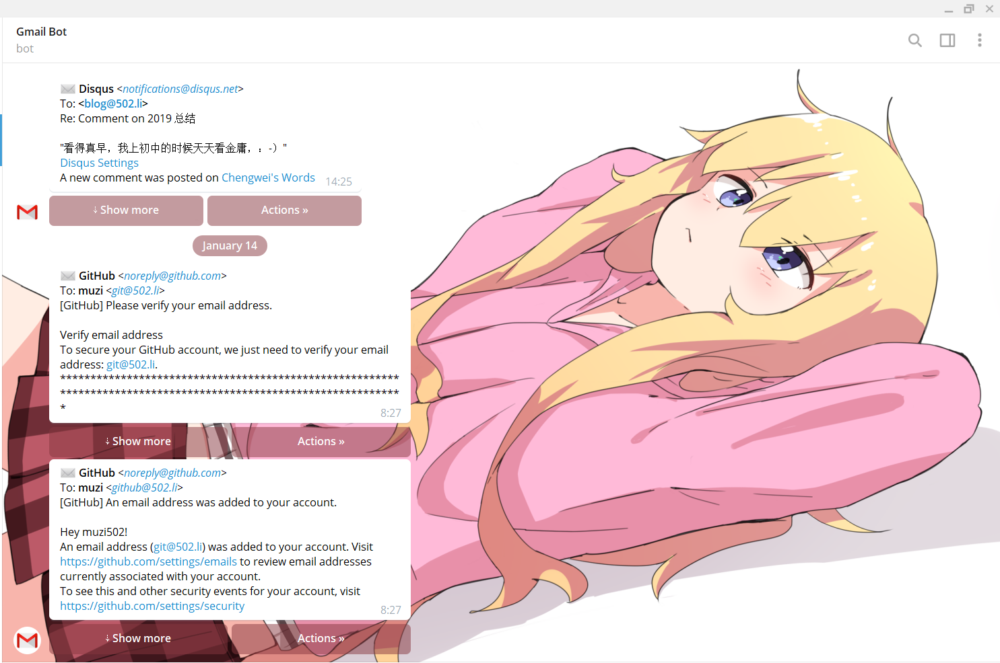
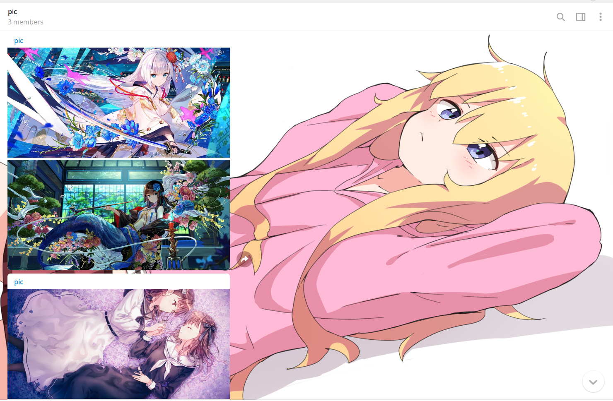
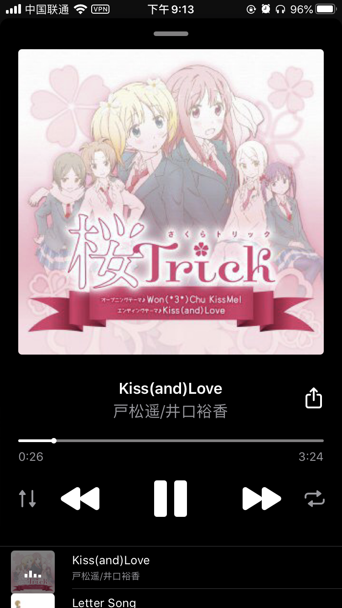
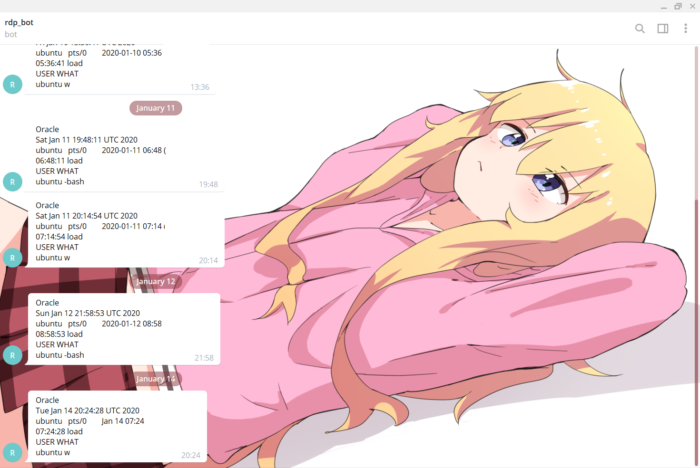
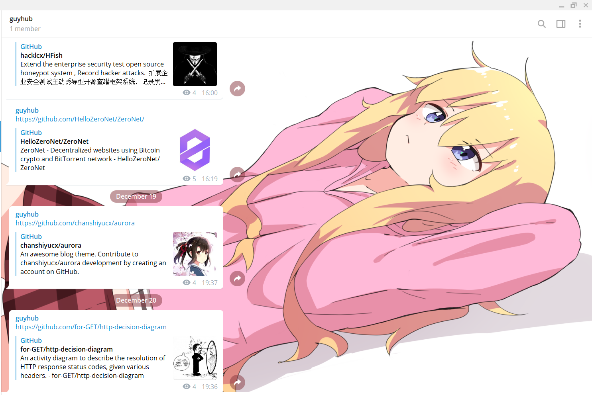

末日三问？
梯子挂掉时在做什么？还能连得上嘛？服务器还可以来拯救吗？
我和我的祖国梯子一刻都不能分离！
自从大一时学会了自由地访问国际互联网就开始使用了 telegram 这个工具，大一时还太年轻，身边使用的人很少所以就没用起来。直到最近两三年，开始慢慢地摆脱国内的局域网，就慢慢将自己的社交逐渐迁移到 telegram 和 Twitter 上，还有最重要的博客，在那里收获了一大堆小伙伴。
今天分享一下我使用 telegram 的一点人生的经验 🕶👓
世界上最好用的免费：
— 502.li (@muzi_ii) July 30, 2019
IM
网盘
图床
音乐播放器
视频播放器
邮件收信箱
RSS 订阅
视频下载器
临时邮箱
应用商店
—— Telegram
欢迎补充 pic.twitter.com/TuMRfvxi31
碎碎念频道
建立一个私有频道，将自己所有的想法和感想都整理到这个频道里，并且定期导出这些私有频道里得内容，以免哪天炸号没了😂。碎碎念的频道里基本上乱七八糟，有新闻、有图片、有文件、有链接等等。
十月份的时候，自己写过一篇三万多字《毕业后的一点思考》 ，想必 twitter 上的小伙伴应该看过。在写这篇文章的时候，里面的感想和引用消息都来自我的私有频道。现在也养成了写周记的习惯，每周写周记的时候也会把碎碎念里的信息当作回顾的时间线，不然不知道这一周发声了些什么😂
运维笔记频道
主要是记录一些工作中会遇到的问题，收集一些与工作相关的博客文章，抽出时间拿来精读这些内容。
设备间分享文件
最主用来将 iPhone 上的几张照片发送到 PC 上的时候，使用 telegram 无疑是最方便的。相比来讲插数据线也够麻烦的，还需要到内部存储里找文件。
共享粘贴板
有时候需要在 PC 和手机之间共享文字的时候，就通过 telegram 发送到自己的私有频道中。还是很方便的。
Gmail
这也是我第二使用最频繁得工具，绑定telegram 官方认证的 Gmail 机器人 @GmailBot就可以收到 Gmail 的邮件内容，而且还可以回复邮件。收到消息也比较准时，iOS 在锁屏没开梯子的情况下还能正常收到 telegram 通知推送的 Gmail 信息。不过我 Gmail 收到的邮件也绝大读书都是双因素验证个邮件，就是将 Google voice 的短信转发到 Google 账户的 Gmail下，就可以通过 email 来接受短信啦

RSS
使用 rssbot 开源机器人订阅了一些喜欢的个人独立博客，自己目前拥有一个 490 多人的 RSS 订阅频道RSS_kubernetes 。不过里面都是一些和 kubernetes 、docker 容器技术相关的个人博客。自己私人的 RSS 私有频道也绝大多数是和运维相关的。
图库
每天都会刷一会 twitter 和 pixiv ，关注了一些喜欢的画师，看到一些心动的 老婆 (死宅真恶心：- ）小声)，就复制发送到 telegram 私有频道中。目前为止，自己的私有频道已经收集了 350 多张图啦。


其实除了 telegram 之外，我 OneDrive 网盘里还存了一千多张😂，咱只喜欢纸片人：）
1 | ╭─debian@debian /mnt/f/OneDrive/图片/Animal |
网盘
网盘功能勉强算是，但使用的不算多，大多数都是往私有频道里存放一些讽刺老大哥的视频😂。据说是单个 1.5GB 文件大小限制，我是定期每周都会导出 telegram 上的数据，以免丢失。
音乐播放器
之前使用 iTunes 将音乐拷贝到手机上觉着太麻烦了，就是用了 telegram 来当音乐播放器 ，效果还是不错滴。不过后来电脑上装了 iTunes 就一直使用 iTunes 来同步 PC 和手机之间的音乐了。有时还是会使用 telegram 来听歌，最多的就是一些喜欢的不得了的歌，单曲循环一直听着。

监控服务器
参照我元旦的时候写的那篇博客 VPS 安全加固之用户登录后向 telegram 发送登录信息
在此先说明一下，使用 telegram 的主要原因是 telegram bot 向自己发送信息，iOS 客户端在锁屏不挂梯子的情况下照样正常能收到消息通知，这还好归因于 iOS 有统一的消息推送机制，而不像 Android 阵营，国内的毒瘤 app 们我行我素，我就是不走 Google Cloud Messaging 简称 GCM，我就是自己搞一套，于是 Android 阵营里，有 xiaomi PUSH 、vivo PUSH 、huawei PUSH 等等，非常恶心人。而如果使用 GCM 的推送的话，必须要挂梯子，全天挂着梯子还是很费电的。

短信转发
自己有一部 Android 备用机，只有来接收短信和电话。电话通过无条件转移到主力机上。短信就通过 telegram-sms 转发到 telegram 上，这样出门的时候就可以把 Android 备用机放在家里啦😂。之前我使用 tasker 转发短信，但 tasker 太不稳定了，有时候短信触发器无法触发执行任务倒是很头疼。所以就一直使用了 telegram-sms 来转发短信。默认是通过网络将短信转发到 telegram ，如果网络无法连接到 telegram 的话就使用短信转发到另一个手机号上。
机器人
GitHub

书籍记录
主要是存放一些要看的书籍，大部分都是在阅读别人博客的时候，看到别人的读书年度书单，在里面找到自己喜欢的，然后把图书的信息发送到频道里。
视频下载器
youtube 视频和音乐下载，很好用，不过好像有时候会推广告 https://t.me/utubebot
临时邮箱
待补充
半个多小时写这篇文章，时间仓促，所以以后发现更多好玩儿的再补充上来